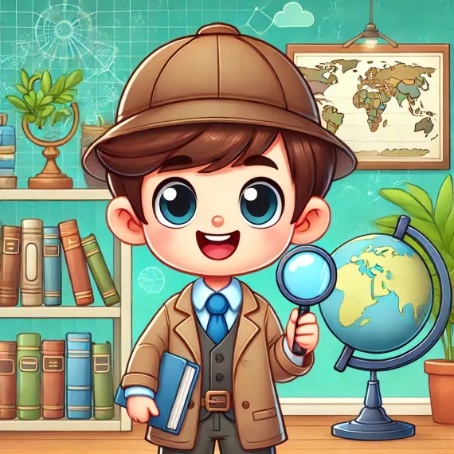

Proceso
- Investiga los principales problemas ambientales en tu localidad.
- Selecciona el papel que desempeñarás para saber qué deberás realizar a lo largo de esta campaña:
-
Investigadores
Son los detectives del equipo. Su trabajo es buscar toda la información importante sobre el problema que eligieron. Averigua por qué sucede, a quién afecta y cómo se podría solucionar.
- Busca en internet, libros o pregunta a expertos.
- Anota todo lo que encuentres y compártelo con tu equipo.
- Ayuda a que todos tengan claro de qué se trata el problema.
-
Diseñadores
Tú eres el artista del equipo. Tu misión es crear cosas que llamen la atención de las personas, como dibujos, carteles, vídeos o imágenes para su campaña.

- Usa colores, letras grandes y dibujos interesantes.
- Diseña algo que la gente quiera mirar y que les explique el problema de manera rápida.
- Asegúrate de que el trabajo sea claro y creativo.
-
Comunicadores
Vas a escribir un pequeño texto que explique el problema, la solución y qué quieren lograr con la campaña. Además, prepararás la exposición para la presentación final.

- Escribe el texto de forma sencilla para que todos lo entiendan.
- Ayuda a tus compañeros a practicar lo que dirán en la presentación.
- Piensa en cómo convencer a las personas para que apoyen la idea.
- Selección del problema
- Piensen en una problemática que sea de su agrado. Puede ser cambio climático, contaminación, acoso escolar, igualdad de género, etc.
- Respondan las preguntas que se muestran a continuación, el comunicador deberá tomar nota.
- Investigación
- Una vez realizada la actividad de los investigadores, todos los integrantes discutirán y seleccionarán las ideas principales, destacando lo más importante que les servirá para la creación de su campaña.
- Diseño de la campaña
- El comunicador deberá tomar nota de las ideas que se vayan generando.
- Todos los integrantes discutirán y seleccionarán las ideas principales destacando lo más importante que les servirá para la creación de su campaña.
- Preparación de la presentación
- Practiquen cómo presentar su propuesta. El comunicador realizará un breve texto que se expondrá frente a la clase, repartirá lo que cada uno va a decir en su presentación de la campaña y verificará que todos participen, incluyéndose él o ella misma.
- Finalmente, presenten su campaña frente al grupo con su material audiovisual y sus notas preparadas. Recuerden que el futuro está en sus manos.


¡Eso es todo!